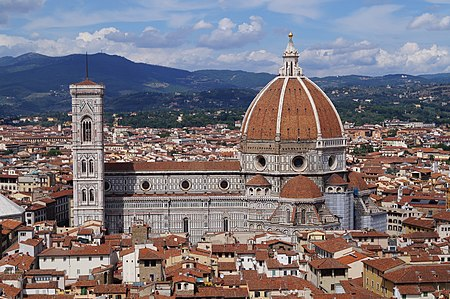
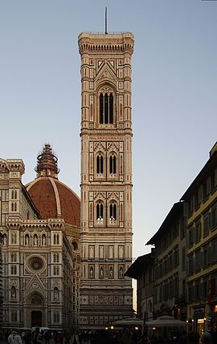

"La catedral más bonita del mundo"
Una de las ciudades que más me impresionó cuando la visité fue Florencia. Cuando puse el primer pie en la Piazza del Duomo, me enamoré inmediatamente. Ya me había parecido impresionante en internet pero en cuanto la ves con tus propios ojos te das realmente cuenta de la obra maestra que es. Su nombre realmente es Santa Maria del Fiore y tiene un estilo entre gótico y renacentista.
Su proceso de construcción posee varias etapas, comenzando en 1296 por encargo de la Signoria y terminada en 1887, obteniendo el resultado actual con la contrucción de la fachada por Emilio De Fabris.
Otros edificios
- Campanario de Giotto 
- Museo dell'Opera del Duomo
El Campanario de Giotto está situado al lado de la catedral, aunque en sus inicios se encontraba al lado de la fachada en vez de en posición retranqueada. Fue proyectado por Giotto, a quien toma su nombre, pero construido por Andrea Pisano y completado por Francesco Talenti. Tiene 84 metros de altura y sus formas se aligeran progresivamente por la presencia de bíforas y tríforas. Fue declarado Patrimonio de la Humanidad en 1982
El Museo dell'Opera del Duomo se encuentra en un palacio delante de los ábsides de la Catedral, dominado por un busto de Cosimo I en su fachada. La Opera del Duomo es todavía hoy una institución que se encarga de la administración, conservación y restauración de todos los monumentos y museos situados en la Piazza del Duomo y la Piazza San Giovanni. El museo posee numerosas obras retiradas por motivos de conservación de los monumentos de la plaza, como los azulejos y esculturas del campanario, la Porta del Paradiso del Baptisterio, los coros de Donatello,... (tendrás que visitarlo para descubrir el resto ;) )
También hay una sección dedicada a la construcción de la Cúpula de Brunelleschi, mientras que está completamente documentada la historia de la fachada, desde las esculturas retiradas de la obra primitiva de Arnolfo di Cambio hasta los proyectos presentados al concurso internacional convocado en el siglo XIX.
Curiosidades
- El baptisterio de San Giovanni es uno de los edificios más antiguos de Florencia y está en la Piazza del Duomo. Su puerta de bronce, conocida como la "Puerta del Paraíso", es famosa porque fue diseñada por Lorenzo Ghiberti en el siglo XV.
- Cada año, en la víspera del Día de San Juan (24 de junio), se celebra la famosa carrera de caballos de la "Calcio Storico" en la Piazza del Duomo. Este deporte tradicional se originó en Florencia en el siglo XVI y los equipos compiten por el honor de ganar el "Scudetto", un trofeo especial.